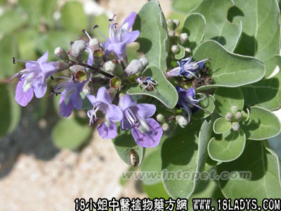

植物名：单叶蔓荆。
生长环境：本品为伏地或倾斜的小灌木。沿海地区较潮湿土壤上或栽培。
分布：我国沿海各省，也产于云南。
入药部分：叶。
采集期：夏采叶，秋采子。
自采地点：家种。
功能：祛风行气、散瘀止痛、消疮肿。
性味：性湿、味甘微苦、气香无毒。
主治、用量和用法：跌打肿痛：用叶1～两捣烂，加酒适量，炖1小时服。或将鲜叶适量，捣烂加酒煮热外敷。
验方：（治跌打肿痛方）白背木耳叶、血见愁、入地金牛根、千大锤、大还魂、小还魂，每药5钱、清水四碗，煎成一碗服。
（方解）方中白背木耳叶去瘀止痛，血见愁、大还魂、小还魂散瘀止血，千大锤祛瘀行气，入地金牛根活血止痛。合为散瘀止痛、行气、活血之剂。对于跌打伤肿痛有效。
（方歌）跌打白背木耳叶，血见愁合金牛根，大小还魂千打锤，散瘀止痛血复生。